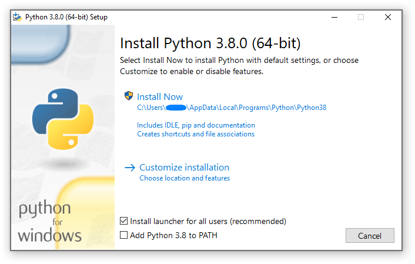
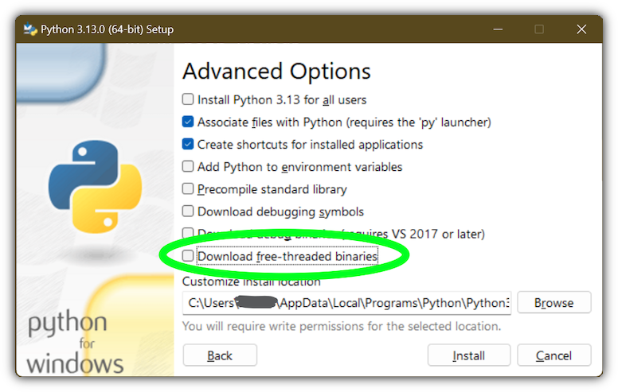

4. Utilizando Python no Windows¶
Este documento pretende dar uma visão geral do comportamento específico do Windows que você deve conhecer quando fores utilizar o Python no sistema operacional Microsoft Windows.
Ao contrário da maioria dos sistemas e serviços Unix, o Windows não inclui uma instalação do Python com suporte no sistema. Em vez disso, o Python pode ser obtido de diversos distribuidores, inclusive diretamente da equipe do CPython. Cada distribuição do Python terá suas próprias vantagens e desvantagens; no entanto, a consistência com outras ferramentas que você usa geralmente é um benefício valioso. Antes de se comprometer com o processo descrito aqui, recomendamos verificar suas ferramentas existentes para ver se elas podem fornecer Python diretamente.
Para obter o Python da equipe do CPython, use o Python Install Manager (gerenciador de instalação do Python). Esta é uma ferramenta autônoma que disponibiliza o Python como comandos globais na sua máquina Windows, integra-se ao sistema e suporta atualizações ao longo do tempo. Você pode baixar o Python Install Manager. em python.org/downloads ou pelo aplicativo da Microsoft Store.
Após instalar o Python Install Manager, o comando global python pode ser usado em qualquer terminal para iniciar a versão mais recente do Python. Essa versão pode mudar com o tempo, conforme você adiciona ou remove versões diferentes, e o comando py list mostrará qual é a atual.
Em geral, recomendamos que você crie um ambiente virtual para cada projeto e execute <env>\Scripts\Activate no seu terminal para usá-lo. Isso proporciona isolamento entre projetos, consistência ao longo do tempo e garante que comandos adicionais adicionados por pacotes também estejam disponíveis na sua sessão. Crie um ambiente virtual usando python -m venv <caminho do ambiente>.
Se os comandos python ou py não estiverem funcionando, consulte a seção Solução de problemas abaixo. Às vezes, são necessárias etapas manuais adicionais para configurar seu PC.
Além de usar o gerenciador de instalação do Python, o Python também pode ser obtido como pacotes NuGet. Veja Os pacotes nuget.org abaixo para mais informações sobre esses pacotes.
As distribuições incorporáveis são pacotes mínimos do Python adequados para incorporação em aplicações maiores. Elas podem ser instaladas usando o gerenciador de instalação do Python. Consulte O pacote embutível abaixo para obter mais informações sobre esses pacotes.
4.1. Gerenciador de instalação do Python¶
4.1.1. Instalação¶
O gerenciador de instalação do Python pode ser instalado a partir da aplicação da Microsoft Store ou baixado e instalado de python.org/downloads. As duas versões são idênticas.
Para instalar pela Store, basta clicar em “Install”. Após a conclusão, abra um terminal e digite python para começar.
Para instalar o arquivo baixado de python.org, clique duas vezes e selecione “Install” ou execute Add-AppxPackage <caminho para MSIX> no Windows Powershell.
Após a instalação, os comandos python, py e pymanager devem estar disponíveis. Se você já possui instalações do Python ou modificou a variável PATH, pode ser necessário removê-las ou desfazer as modificações. Consulte Solução de problemas para obter mais ajuda sobre como corrigir comandos que não funcionam.
Ao instalar um ambiente de execução pela primeira vez, você provavelmente será solicitado a adicionar um diretório ao seu PATH. Isso é opcional se você preferir usar o comando py, mas é oferecido para aqueles que preferem que todos os apelidos (como python3.14.exe) estejam disponíveis. O diretório será %LocalAppData%\Python\bin por padrão, mas pode ser personalizado por um administrador. Clique em Iniciar e pesquise “Editar as variáveis de ambiente para sua conta” na página de configurações do sistema para adicionar o caminho.
Cada ambiente de execução do Python que você instalar terá seu próprio diretório para scripts. Estes também precisam ser adicionados a PATH se você quiser usá-los.
O gerenciador de instalação do Python será atualizado automaticamente para novas versões. Isso não afeta nenhuma instalação de ambientes de execução do Python. Desinstalar o gerenciador de instalação do Python não desinstala nenhum ambiente de execução do Python.
Se você não conseguir instalar um MSIX no seu contexto, por exemplo, se estiver usando um software de implantação automatizada que não oferece suporte a isso ou se estiver mirando o Windows Server 2019, consulte Instalação avançada abaixo para obter mais informações.
4.1.2. Uso básico¶
O comando recomendado para iniciar o Python é python, que iniciará a versão solicitada pelo script em execução, um ambiente virtual ativo ou a versão padrão instalada, que será a versão estável mais recente, a menos que configurado de outra forma. Se nenhuma versão for solicitada especificamente e nenhum ambiente de execução estiver instalado, a versão mais recente será instalada automaticamente.
Para todos os cenários que envolvem múltiplas versões de ambientes de execução do antigo inicializador py.exe. Por padrão, py corresponde ao comportamento de python, mas também permite opções de linha de comando para selecionar uma versão específica, bem como subcomandos para gerenciar instalações. Estes são detalhados abaixo.
Como o comando py pode já estar sendo executado pela versão anterior, há também um comando pymanager inequívoco. Instalações com script que pretendem usar o gerenciador de instalação Python devem considerar o uso de pymanager, devido à menor chance de conflito com instalações existentes. A única diferença entre os dois comandos é que, quando executados sem argumentos, py iniciará seu interpretador padrão, enquanto pymanager exibirá ajuda (pymanager exec ... oferece comportamento equivalente a py ...).
Cada um desses comandos também possui uma versão em janela que evita a criação de uma janela de console. São eles pyw, pythonw e pywmanager. Um comando python3 também está incluído, imitando o comando python. Ele visa detectar usos acidentais do comando POSIX típico no Windows, mas não se destina a ser amplamente utilizado ou recomendado.
Para iniciar seu ambiente de execução padrão, execute python ou py com os argumentos que você deseja passar para o ambiente de execução (como arquivos de script ou o módulo a ser iniciado):
$> py
...
$> python meu-script.py
...
$> py -m this
...
O ambiente de execução padrão pode ser substituído pela variável de ambiente PYTHON_MANAGER_DEFAULT ou por um arquivo de configuração. Consulte Configuração para obter informações sobre as configurações.
Para iniciar um ambiente de execução específico, o comando py aceita a opção -V:<TAG>. Esta opção deve ser especificada antes de quaisquer outras. A tag é parte ou todo o identificador do ambiente; para aqueles da equipe do CPython, parece a versão, potencialmente com a plataforma. Para compatibilidade, o V: pode ser omitido nos casos em que a tag se refere a uma versão oficial e começa com 3.
$> py -V:3.14 ...
$> py -V:3-arm64 ...
Ambientes de execução de outros distribuidores podem exigir a inclusão da company também. Ela deve ser separada da tag por uma barra (/ ou \) e pode ser encurtada a qualquer prefixo de sua valor completo. Especificar a empresa é opcional quando se trata de PythonCore, e especificar a tag é opcional (mas não a barra) quando se deseja a versão mais recente de uma empresa específica.
$> py -V:Distribuidor\1.0 ...
$> py -V:distrib/ ...
Se nenhuma versão for especificada, mas um arquivo de script for passado, o script será inspecionado em busca de uma linha de shebang. Este é um formato especial para a primeira linha de um arquivo que permite a substituição do comando. Consulte Linhas shebang para obter mais informações. Quando não houver uma linha shebang ou o problema não puder ser resolvido, o script será iniciado com o ambiente de execução padrão.
Se você estiver executando em um ambiente virtual ativo, não tiver solicitado uma versão específica e não houver uma linha shebang, o ambiente de execução padrão será o ambiente virtual em questão. Nesse cenário, o comando python provavelmente já foi substituído e nenhuma dessas verificações ocorreu. No entanto, esse comportamento garante que o comando py possa ser usado de forma intercambiável.
Quando nenhum ambiente de execução estiver instalado, qualquer comando de inicialização tentará instalar a versão solicitada e iniciá-la. Entretanto, após alguma versão ser instalada, apenas os comandos py exec ... e pymanager exec ... serão instalados se a versão solicitada estiver ausente. Outras formas de comandos exibirão um erro e orientarão você a usar py install primeiro.
4.1.3. Comando help¶
O comando py help exibirá a lista completa de comandos suportados, juntamente com suas opções. Qualquer comando pode receber a opção -? para exibir sua ajuda, ou seu nome pode ser passado para py help.
$> py help
$> py help install
$> py install /?
Todos os comandos oferecem suporte a algumas opções comuns, que serão exibidas por py help. Essas opções devem ser especificadas após qualquer subcomando. Especificar -v ou --verbose aumentará a quantidade de saída exibida, e -vv aumentará ainda mais para fins de depuração. Passar -q ou --quiet reduzirá a saída, e -qq a reduzirá ainda mais.
A opção --config=<PATH> permite especificar um arquivo de configuração para substituir várias configurações simultaneamente. Consulte Configuração abaixo para obter mais informações sobre esses arquivos.
4.1.4. Listando ambientes de execução¶
$> py list [-f=|--format=<FMT>] [-1|--one] [--online|-s=|--source=<URL>] [<TAG>...]
A lista de ambientes de execução instalados pode ser visualizada usando py list. Um filtro pode ser adicionado na forma de uma ou mais tags (com ou sem especificador de empresa), e cada uma pode incluir um prefixo <, <=, >= ou > para restringir a um intervalo.
Vários formatos são suportados e podem ser passados como a opção --format=<FMT> ou -f <FMT>. Os formatos incluem table (uma visualização de tabela amigável), csv (tabela separada por vírgulas), json (um único blob JSON), jsonl (um blob JSON por resultado), exe (apenas o caminho do executável), prefix (apenas o caminho do prefixo).
A opção --one ou -1 exibe apenas um único resultado. Se o ambiente de execução padrão estiver incluído, será ele. Caso contrário, o “melhor” resultado será exibido (“melhor” é definido de forma deliberadamente vaga, mas geralmente será a versão mais recente). O resultado exibido por py list --one <TAG> corresponderá ao ambiente de execução que seria iniciado por py -V:<TAG>.
A opção --only-managed exclui resultados que não foram instalados pelo gerenciador de instalação do Python. Isso é útil para determinar quais ambientes de execução podem ser atualizados ou desinstalados por meio do comando py.
A opção --online é uma abreviação de --source=<URL> com a fonte padrão. Passar qualquer uma dessas opções pesquisará no índice online os ambientes de execução que podem ser instalados. O resultado exibido por py list --online --one <TAG> corresponderá ao ambiente de execução que seria instalado por py install <TAG>.
$> py list --online 3.14
Para compatibilidade com o inicializador antigo, os comandos --list, --list-paths, -0 e -0p (por exemplo, py -0p) foram mantidos. Eles não permitem opções adicionais e produzirão uma saída com o formato antigo.
4.1.5. Instalando ambientes de execução¶
$> py install [-s=|--source=<URL>] [-f|--force] [-u|--update] [--dry-run] [<TAG>...]
Novas versões de ambientes de execução podem ser adicionadas usando py install. Uma ou mais tags podem ser especificadas, e a tag especial default pode ser usada para selecionar o padrão. Intervalos não são suportados para instalação.
A opção --source=<URL> permite substituir o índice online usado para obter ambientes de execução. Isso pode ser usado com um índice offline, como mostrado em Instalações offline.
Passar --force ignorará quaisquer arquivos em cache e removerá qualquer instalação existente para substituí-la pela especificada.
Passar --update substituirá as instalações existentes se a nova versão for mais recente. Caso contrário, elas serão mantidas. Se nenhuma tag for fornecida com --update, todas as instalações gerenciadas pelo gerenciador de instalação do Python serão atualizadas se versões mais recentes estiverem disponíveis. As atualizações removerão quaisquer modificações feitas na instalação, incluindo pacotes instalados globalmente, mas os ambientes virtuais continuarão funcionando.
Passar --dry-run gerará saída e logs, mas não modificará nenhuma instalação.
Passar o argumento --refresh atualizará todos os registros dos ambientes de execução instalados. Isso recriará atalhos no menu Iniciar, chaves de registro e aliases globais (como python3.14.exe ou aqueles referentes a scripts instalados). Esses itens são atualizados automaticamente durante a instalação de qualquer runtime, mas podem precisar de atualização manual após a instalação de pacotes.
In addition to the above options, the --target option will extract the
runtime to the specified directory instead of doing a normal install.
This is useful for embedding runtimes into larger applications.
Unlike a normal install, py will not be aware of the extracted runtime,
and no Start menu or other shortcuts will be created.
To launch the runtime, directly execute the main executable (typically
python.exe) in the target directory.
$> py install ... [-t=|--target=<PATH>] <TAG>
The py exec command will install the requested runtime if it is not already
present. This is controlled by the automatic_install configuration
(PYTHON_MANAGER_AUTOMATIC_INSTALL), and is enabled by default.
If no runtimes are available at all, all launch commands will do an automatic
install if the configuration setting allows. This is to ensure a good experience
for new users, but should not generally be relied on rather than using the
py exec command or explicit install commands.
4.1.6. Instalações offline¶
Para executar instalações offline do Python, você precisará primeiro criar um índice offline em uma máquina que tenha acesso à rede.
$> py install --download=<PATH> ... <TAG>...
A opção --download=<PATH> baixará os pacotes para as tags listadas e criará um diretório contendo-os e um arquivo index.json adequado para instalação posterior. Todo esse diretório pode ser movido para a máquina offline e usado para instalar um ou mais dos ambientes de execução incluídos:
$> py install --source="<PATH>\index.json" <TAG>...
O gerenciador de instalação do Python pode ser instalado baixando seu instalador e movendo-o para outra máquina antes da instalação.
Como alternativa, os arquivos ZIP em um diretório de índice offline podem ser simplesmente transferidos para outra máquina e extraídos. Isso não registrará a instalação de forma alguma e, portanto, ela deve ser iniciada referenciando diretamente os executáveis no diretório extraído, mas às vezes é uma abordagem preferível em casos em que a instalação do gerenciador de instalação do Python não é possível ou conveniente.
Dessa forma, os ambientes de execução do Python podem ser instalados e gerenciados em uma máquina sem acesso à internet.
4.1.7. Desinstalando ambientes de execução¶
$> py uninstall [-y|--yes] <TAG>...
Ambientes de execução pode ser removidos com o uso do comando py uninstall. Uma ou mais tags devem ser especificadas. Não há suporte para intervalos aqui.
A opção --yes ignora o prompt de confirmação antes da desinstalação.
Em vez de passar as tags individualmente, a opção --purge pode ser especificada. Isso removerá todos os ambientes de execução gerenciados pelo gerenciador de instalação do Python, incluindo a limpeza do menu Iniciar, do registro e de quaisquer caches de download. Ambientes de execução que não foram instalados pelo gerenciador de instalação do Python não serão afetados, nem os arquivos de configuração criados manualmente.
$> py uninstall [-y|--yes] --purge
O gerenciador de instalação do Python pode ser desinstalado por meio da página de configurações “Aplicativos instalados” do Windows. Isso não remove nenhum ambiente de execução, e eles ainda poderão ser usados, embora o python global e o comando py sejam removidos. A reinstalação do gerenciador de instalação do Python permitirá que você gerencie esses ambientes de execução novamente. Para limpar completamente todos os ambientes de execução do Python, execute o --purge antes de desinstalar o gerenciador de instalação do Python.
4.1.8. Configuração¶
O gerenciador de instalação do Python é configurado com uma hierarquia de arquivos de configuração, variáveis de ambiente, opções de linha de comando e configurações de registro. Em geral, os arquivos de configuração têm a capacidade de configurar tudo, incluindo a localização de outros arquivos de configuração, enquanto as configurações de registro são exclusivas do administrador e substituem os arquivos de configuração. As opções de linha de comando substituem todas as outras configurações, mas nem todas as opções estão disponíveis.
Esta seção descreverá os padrões, mas esteja ciente de que instalações modificadas ou substituídas podem resolver as configurações de maneira diferente.
A global configuration file may be configured by an administrator, and would be
read first. The user configuration file is stored at
%AppData%\Python\pymanager.json
(note that this location is under Roaming, not Local) and is read next,
overwriting any settings from earlier files. An additional configuration file
may be specified as the PYTHON_MANAGER_CONFIG environment variable or the
--config command line option (but not both).
These locations may be modified by administrative customization options listed
later.
As configurações a seguir são aquelas que provavelmente serão modificadas em uso normal. As seções posteriores listam aquelas destinadas à personalização administrativa.
Opções de configuração padrão
Chave de configuração |
Variável de ambiente |
Descrição |
|---|---|---|
|
|
A versão padrão preferida para iniciar ou instalar. Por padrão, esta é interpretada como a versão mais recente, não pré-lançada, da equipe do CPython. |
|
|
A plataforma padrão preferida para iniciar ou instalar. Isso é tratado como um sufixo para a tag especificada, de modo que |
|
|
O local onde os arquivos de log são gravados. Por padrão, |
|
|
True to allow automatic installs when using |
|
|
Verdadeiro para permitir a listagem e a execução de ambientes que não foram instalados pelo gerenciador de instalação do Python, ou falso para excluí-los. Por padrão, verdadeiro. |
|
|
Verdadeiro para permitir que shebangs em arquivos |
|
(nenhuma) |
Mapping from shebang line template to alternative command, such as
|
|
|
Define o nível padrão de saída (0-50). O padrão é 20. Valores mais baixos produzem mais saída. As variáveis de ambiente são booleanas e podem produzir saída adicional durante a inicialização, que é posteriormente suprimida por outra configuração. |
|
|
|
|
|
Substitui o feed de índice para obter novas instalações. |
|
(nenhuma) |
True to generate global commands for installed packages (such as
|
|
|
Especifica o formato padrão usado pelo comando |
|
(nenhuma) |
Especifica o diretório raiz onde os ambientes de execução serão instalados. Se você alterar essa configuração, os ambientes de execução instalados anteriormente não poderão ser usados, a menos que você os mova para o novo local. |
|
(nenhuma) |
Specify the directory where global commands (such as |
|
(nenhuma) |
Especifica o diretório onde os arquivos baixados serão armazenados. Este diretório é um cache temporário e pode ser limpo periodicamente. |
Nomes pontilhados devem ser aninhados dentro de objetos JSON, por exemplo, list.format seria especificado como {"list": {"format": "table"}}.
4.1.9. Linhas shebang¶
Se a primeira linha de um arquivo de script começar com #!, ela é conhecida como uma linha “shebang”. Linux e outros sistemas operacionais semelhantes ao Unix têm suporte nativo para essas linhas, que são comumente usadas nesses sistemas para indicar como um script deve ser executado. Os comandos python e py permitem que os mesmos recursos sejam usados com scripts Python no Windows.
Para permitir que as linhas shebang em scripts Python sejam portáveis entre Unix e Windows, vários comandos “virtuais” são suportados para especificar qual interpretador usar. Os comandos virtuais suportados são:
/usr/bin/env <ALIAS>/usr/bin/env -S <ALIAS>/usr/bin/<ALIAS>/usr/local/bin/<ALIAS><ALIAS>
Por exemplo, se a primeira linha do seu script começa com
#! /usr/bin/python
O Python padrão ou um ambiente virtual ativo será localizado e utilizado. Como muitos scripts Python escritos para funcionar no Unix já terão essa linha, você deve perceber que esses scripts podem ser usados pelo inicializador sem modificação. Se você está escrevendo um novo script no Windows que você espera que seja útil no Unix, você deve usar uma dessas linhas shebang começando com /usr.
Qualquer um dos comandos virtuais acima pode ter o <ALIAS> substituído por um apelido de um ambiente de execução instalado. Ou seja, qualquer comando gerado no diretório global de apelidos (que você pode ter adicionado à sua variável de ambiente PATH) pode ser usado em uma shebang, mesmo que não esteja no seu PATH. Isso permite o uso de shebangs como /usr/bin/python3.12 para selecionar um determinado ambiente de execução.
Se nenhum ambiente de execução estiver instalado ou se a instalação automática estiver ativada, o ambiente de execução solicitado será instalado, se necessário. Consulte Configuração para obter informações sobre as definições de configuração.
A forma /usr/bin/env da linha shebang também pesquisará a variável de ambiente PATH em busca de comandos não reconhecidos. Isso corresponde ao comportamento do programa env do Unix, que realiza a mesma busca, mas prefere executar comandos Python conhecidos. Um aviso pode ser exibido ao pesquisar executáveis arbitrários, e essa busca pode ser desabilitada pela opção de configuração shebang_can_run_anything.
As linhas Shebang que não correspondem a nenhum dos padrões são tratadas como caminhos executáveis do Windows que são absolutos ou relativos ao diretório que contém o arquivo de script Isso é uma conveniência para scripts exclusivos do Windows, como aqueles gerados por um instalador, pois o comportamento não é compatível com shells de estilo Unix. Esses caminhos podem ser citados e podem incluir vários argumentos, após os quais o caminho para o script e quaisquer argumentos adicionais serão anexados.
Since version 26.3 of the Python install manager, custom shebang templates may
be added to your configuration file. Add the shebang_templates object with
one member for each template (the string to match) and the command to use when
the template is matched. Most commands should be py -V:<tag> (or pyw) to
launch one of your installed runtimes. The py -3.<version> form is also
allowed, as is a plain py to launch the default. No other arguments are
supported.
{
"shebang_templates": {
"/usr/bin/python": "py",
"/usr/bin/my_custom_python": "py -V:MyCustomPython/3"
}
}
If the substitute command is not py or pyw, it will be written back into
the shebang and regular handling continues. If launching arbitrary executables
is permitted, then providing a full path will allow you to redirect from Python
to any executable. The template should match either the entire line (ignoring
leading and trailing whitespace), or up to the first space in the shebang line.
Nota
O comportamento dos shebangs no gerenciador de instalação do Python é sutilmente diferente do antigo inicializador py.exe, e as opções de configuração antigas não se aplicam mais. Se você depende especificamente do comportamento ou configuração antigos, recomendamos instalar o inicializador legado. O comando py do inicializador legado vai substituir o do PyManager por padrão, e você precisará usar os comandos pymanager para instalar e desinstalar.
4.1.10. Instalação avançada¶
Para situações em que um MSIX não pode ser instalado, como em algumas plataformas de distribuição administrativa mais antigas, há um MSI disponível na página de downloads do python.org. Este MSI não possui interface de usuário e só pode executar instalações por máquina em seu local padrão em Arquivos de Programas. Ele tentará modificar a variável de ambiente do sistema PATH para incluir este local de instalação, mas certifique-se de validar isso em sua configuração.
Nota
O Windows Server 2019 é a única versão do Windows compatível com o CPython que não oferece suporte a MSIX. Para o Windows Server 2019, você deve usar o MSI.
Esteja ciente que o pacote MSI não inclui nenhum ambiente de execução e, portanto, não é adequado para instalações em ambientes off-line sem criar também um indíce para instalação off-line. Consulte Instalações offline e Configuração administrativa para obter informações sobre como lidar com esses cenários.
Ambientes de execução instalados pelo MSI são compartilhados com os instalados pelo MSIX e são todos apenas por usuário. O gerenciador de instalação do Python não permite a instalação de ambientes de execução por máquina. Para emular uma instalação por máquina, você pode usar o py install --target=<shared location> como administrador e adicionar suas próprias modificações em todo o sistema ao PATH, ao registro ou ao menu Iniciar.
Quando o MSIX é instalado, mas os comandos não estão disponíveis na variável de ambiente PATH, eles podem ser encontrados em %LocalAppData%\Microsoft\WindowsApps\PythonSoftwareFoundation.PythonManager_3847v3x7pw1km ou %LocalAppData%\Microsoft\WindowsApps\PythonSoftwareFoundation.PythonManager_qbz5n2kfra8p0, dependendo se foi instalado a partir do python.org ou da Windows Store. Não é recomendável tentar executar o executável diretamente dos Arquivos de Programas.
Para instalar programaticamente o gerenciador de instalação do Python, é mais fácil usar o WinGet, que está incluído em todas as versões suportadas do Windows:
$> winget install 9NQ7512CXL7T -e --accept-package-agreements --disable-interactivity
# Opcionalmente execute o verificador de configuraçao e aceite todas as alterações
$> py install --configure -y
Para baixar o gerenciador de instalação do Python e instalá-lo em outra máquina, o seguinte comando WinGet baixará os arquivos necessários da Loja para o seu diretório de Downloads (adicione -d <local> para personalizar o local de saída). Isso também gera um arquivo YAML que parece desnecessário, pois o MSIX baixado pode ser instalado iniciando ou usando os comandos abaixo.
$> winget download 9NQ7512CXL7T -e --skip-license --accept-package-agreements --accept-source-agreements
Para instalar ou desinstalar programaticamente um MSIX usando apenas o PowerShell, os cmdlets Add-AppxPackage e Remove-AppxPackage do PowerShell são recomendados:
$> Add-AppxPackage C:\Downloads\python-manager-25.0.msix
...
$> Get-AppxPackage PythonSoftwareFoundation.PythonManager | Remove-AppxPackage
A versão mais recente pode ser baixada e instalada pelo Windows passando o arquivo AppInstaller para o comando Add-AppxPackage. A instalação é feita usando o MSIX em python.org e é recomendada apenas para casos em que a instalação pela Loja (interativamente ou usando o WinGet) não é possível.
$> Add-AppxPackage -AppInstallerFile https://www.python.org/ftp/python/pymanager/pymanager.appinstaller
Outras ferramentas e APIs também podem ser usadas para provisionar um pacote MSIX para todos os usuários em uma máquina, mas o Python não considera esse cenário compatível. Sugerimos consultar o cmdlet Add-AppxProvisionedPackage do PowerShell, a classe nativa PackageManager do Windows ou a documentação e o suporte da sua ferramenta de implantação.
Independentemente do método de instalação, os usuários ainda precisarão instalar suas próprias cópias do Python, pois não há como acionar essas instalações sem ser um usuário logado. Ao usar o MSIX, a versão mais recente do Python estará disponível para todos os usuários instalarem sem acesso à rede.
Observe que o MSIX disponível para download na Loja e no site do Python são ligeiramente diferentes e não podem ser instalados ao mesmo tempo. Sempre que possível, sugerimos usar os comandos WinGet acima para baixar o pacote da Loja, a fim de reduzir o risco de instalação conflitante. Não há restrições de licenciamento para o gerenciador de instalação do Python que impeçam o uso do pacote da Loja dessa forma.
4.1.11. Configuração administrativa¶
Há diversas opções que podem ser úteis para administradores substituírem a configuração do gerenciador de instalação do Python. Elas podem ser usadas para fornecer cache local, desabilitar certos tipos de atalhos e substituir conteúdo agrupado. Todas as opções de configuração acima podem ser definidas, assim como as abaixo.
As opções de configuração podem ser substituídas no registro definindo valores em HKEY_LOCAL_MACHINE\Software\Policies\Python\PyManager, onde o nome do valor corresponde à chave de configuração e o tipo de valor é REG_SZ. Observe que essa chave pode ser personalizada, mas somente modificando o arquivo de configuração principal distribuído com o gerenciador de instalação do Python. Recomendamos, no entanto, que os valores do registro sejam usados apenas para definir base_config como um arquivo JSON contendo o conjunto completo de substituições. As substituições de chave do registro substituirão qualquer outra configuração configurada, enquanto base_config permite que os usuários modifiquem ainda mais as configurações necessárias.
Observe que a maioria das configurações com variáveis de ambiente oferece suporte a essas variáveis porque a configuração padrão especifica a variável. Se você as substituir, a variável de ambiente não funcionará mais, a menos que você a substitua por outra. Por exemplo, o valor padrão de confirm é literalmente %PYTHON_MANAGER_CONFIRM%, o que resolverá a variável no momento do carregamento. Se você substituir o valor para yes, a variável de ambiente não será mais usada. Se você substituir o valor para %CONFIRM%, essa variável de ambiente será usada.
As definições de configuração que são caminhos são interpretadas como relativas ao diretório que contém o arquivo de configuração que as especificou.
Opções de configuração administrativa
Chave de configuração |
Descrição |
|---|---|
|
O arquivo de configuração de maior prioridade para leitura. Observe que somente o arquivo de configuração embutido e o registro podem modificar essa configuração. |
|
O segundo arquivo de configuração a ser lido. |
|
O terceiro arquivo de configuração a ser lido. |
|
Local do registro para verificar se há substituições. Observe que somente o arquivo de configuração embutido pode modificar esta configuração. |
|
Diretório somente leitura contendo arquivos armazenados em cache localmente. |
|
Caminho ou URL para um índice a ser consultado quando o índice principal não puder ser acessado. |
|
Lista separada por vírgulas de tipos de atalhos permitidos (por exemplo, |
|
Lista separada por vírgulas de tipos de atalhos a serem excluídos (por exemplo, |
|
True to use hard links for global shortcuts to save disk space. If false,
each shortcut executable is copied instead. After changing this setting,
you must run |
|
Local do registro para leitura e gravação de entradas da PEP 514. Por padrão, |
|
Pasta do menu Iniciar para gravar atalhos. Por padrão, |
|
Caminho para o ambiente virtual ativo. Por padrão, é |
|
Verdadeiro para suprimir avisos visíveis quando um shebang executa uma aplicação que não seja um ambiente de execução Python. |
|
A mapping from source URL to settings specific to that index. When multiple configuration files include this section, URL settings are added or overwritten, but individual settings are not merged. These settings are currently only for index signatures. |
4.1.12. Instalando binários com threads livres¶
Adicionado na versão 3.13.
Distribuições pré-construídas da construção com threads livres estão disponíveis instalando tags com o sufixo t.
$> py install 3.14t
$> py install 3.14t-arm64
$> py install 3.14t-32
Isso vai instalar e registrar como de costume. Se você não tiver outro ambiente de execução instalado, python iniciará este. Caso contrário, você precisará usar py -V:3.14t ... ou, se tiver adicionado o diretório global de apelidos à sua variável de ambiente PATH, o comando python3.14t.exe.
4.1.13. Index signatures¶
Adicionado na versão 26.2.
Index files may be signed to detect tampering. A signature is a catalog file
at the same URL as the index with .cat added to the filename. The catalog
file should contain the hash of its matching index file, and should be signed
with a valid Authenticode signature. This allows standard tooling (on Windows)
to generate a signature, and any certificate may be used as long as the client
operating system already trusts its certification authority (root CA).
Index signatures are only downloaded and checked when the local configuration’s
source_settings section includes the index URL and requires_signature is
true, or the index JSON contains requires_signature set to true. When the
setting exists in local configuration, even when false, settings in the index
are ignored.
As well as requiring a valid signature, the required_root_subject and
required_publisher_subject settings can further restrict acceptable
signatures based on the certificate Subject fields. Any attribute specified in
the configuration must match the attribute in the certificate (additional
attributes in the certificate are ignored). Typical attributes are CN= for
the common name, O= for the organizational unit, and C= for the
publisher’s country.
Finally, the required_publisher_eku setting allows requiring that a specific
Enhanced Key Usage (EKU) has been assigned to the publisher certificate. For
example, the EKU 1.3.6.1.5.5.7.3.3 indicates that the certificate was
intended for code signing (as opposed to server or client authentication).
In combination with a specific root CA, this provides another mechanism to
verify a legitimate signature.
This is an example source_settings section from a configuration file. In
this case, the publisher of the feed is uniquely identified by the combination
of the Microsoft Identity Verification root and the EKU assigned by that root.
The signature for this case would be found at
https://www.python.org/ftp/python/index-windows.json.cat.
{
"source_settings": {
"https://www.python.org/ftp/python/index-windows.json": {
"requires_signature": true,
"required_root_subject": "CN=Microsoft Identity Verification Root Certificate Authority 2020",
"required_publisher_subject": "CN=Python Software Foundation",
"required_publisher_eku": "1.3.6.1.4.1.311.97.608394634.79987812.305991749.578777327"
}
}
}
The same settings could be specified in the index.json file instead. In this
case, the root and EKU are omitted, meaning that the signature must be valid and
have a specific common name in the publisher’s certificate, but no other checks
are used.
{
"requires_signature": true,
"required_publisher_subject": "CN=Python Software Foundation",
"versions": [
// ...
]
}
When settings from inside a feed are used, the user is notified and the settings are shown in the log file or verbose output. It is recommended to copy these settings into a local configuration file for feeds that will be used frequently, so that unauthorised modifications to the feed cannot disable verification.
It is not possible to override the location of the signature file in the feed or
through a configuration file. Administrators can provide their own
source_settings in a mandatory configuration file (see
Configuração administrativa).
If signature validation fails, you will be notified and prompted to continue.
When interactive confirmation is not allowed (for example, because --yes was
specified), it will always abort. To use a feed with invalid configuration in
this scenario, you must provide a configuration file that disables signature
checking for that feed.
"source_settings": {
"https://www.example.com/feed-with-invalid-signature.json": {
"requires_signature": false
}
}
4.1.14. Proxy settings¶
Adicionado na versão 26.4.
By default, the Python install manager will use your system-wide proxy settings, including automatic authentication. For most users, this behaves the same as your browser and other applications.
To override the settings, use the NO_PROXY, HTTP_PROXY and
HTTPS_PROXY environment variables. These should be set in the terminal
session before using the Python install manager. Other applications may also
use the variables, so use caution before setting them globally for your entire
machine.
Setting NO_PROXY to any non-empty value will disable the use of any proxy.
Use this to bypass your system’s default proxy setting and attempt to access the
index server directly.
Setting HTTPS_PROXY to a string like example.com:8080 will connect to
that proxy server for all HTTPS connections. For the default index, all
connections will be using HTTPS, and so this is the usual setting to override.
The HTTP_PROXY variable may be needed if you are using a private index
server that does not use encrypted connections, but does require the default
proxy server to be overridden. It follows the same format as HTTPS_PROXY.
Credentials may be embedded in either setting, however, when HTTPS_PROXY has
credentials embedded they will be used in preference to other credentials. Only
one set of credentials will be used for both types of proxy.
4.1.15. Solução de problemas¶
If your Python install manager does not seem to be working correctly, please
work through these tests and fixes to see if it helps. If not, please report an
issue at our bug tracker,
including any relevant log files (written to your %TEMP% directory by
default).
Solução de problemas
Sintoma |
Coisas pra tentar |
|---|---|
|
|
Clique em Iniciar, abra “Gerenciar aliases de execução de aplicativo” e verifique se os apelidos (aliases) para “Python (default)” estão ativados. Se já estiverem, tente desativá-los e ativá-los novamente para atualizar o comando. Os comandos “Python (windowed)” e “Python install manager” também podem precisar ser atualizados. |
|
Verifique se os comandos |
|
Ensure your |
|
|
|
Clique em Iniciar, abra “Gerenciar aliases de execução de aplicativo” e verifique se os apelidos (aliases) para “Python (default)” estão ativados. Se já estiverem, tente desativá-los e ativá-los novamente para atualizar o comando. Os comandos “Python (windowed)” e “Python install manager” também podem precisar ser atualizados. |
|
Ensure your |
|
|
Isso geralmente significa que você tem o inicializador legado instalado e ele tem prioridade sobre o gerenciador de instalação do Python. Para remover, clique em Iniciar, abra “Aplicativos instalados”, procure por “Python launcher” e desinstale-o. |
|
Clique em Iniciar, abra “Aplicativos instalados”, procure por qualquer ambiente de execução do Python existente e remova-o ou modifique e desative as opções de |
Clique em Iniciar, abra “Gerenciar aliases de execução de aplicativo” e verifique se o apelido |
|
|
Verifique a variável de ambiente |
As instalações gerenciadas pelo gerenciador de instalação do Python serão escolhidas antes das instalações não gerenciadas. Use |
|
Prerelease and experimental installs that are not managed by the Python
install manager may be chosen ahead of stable releases.
Configure your default tag or uninstall the prerelease runtime
and reinstall it using |
|
|
Clique em Iniciar, abra “Gerenciar aliases de execução de aplicativo” e verifique se seus apelidos |
|
Você ativou um ambiente virtual? Execute o script |
The package may be available but missing the generated executable.
We recommend using the |
|
I installed a package with |
Você ativou um ambiente virtual? Execute o script |
New packages do not automatically have global shortcuts created by the
Python install manager. Similarly, uninstalled packages do not have their
shortcuts removed.
Run |
|
Digitar |
Esta é uma limitação conhecida do sistema operacional. Você pode especificar |
Arrastar e soltar arquivos em um script não funciona. |
Essa é uma limitação conhecida do sistema operacional. Ela é suportada pelo inicializador legado ou pelo gerenciador de instalação do Python quando instalado a partir do MSI. |
I have installed the Python install manager multiple times. |
It is possible to install from the Store or WinGet, from the MSIX on the Python website, and from the MSI, all at once. They are all compatible and will share configuration and runtimes. |
See the earlier Instalação avançada section for ways to uninstall the install manager other than the typical Installed Apps (Add and Remove Programs) settings page. |
|
My old |
The new Python install manager no longer supports this configuration file or its settings, and so it will be ignored. See Configuração for information about configuration settings. |
4.2. O pacote embutível¶
Adicionado na versão 3.5.
A distribuição embutida é um arquivo ZIP contendo um ambiente Python mínimo. Ela foi criada para atuar como parte de outra aplicação, ao invés de ser diretamente acessada por usuários finais.
Para instalar uma distribuição incorporada, recomendamos usar o comando py install com a opção --target:
$> py install 3.14-embed --target=<directory>
Quando extraída, a distribuição embutida é (quase) completamente isolada do sistema do usuário, incluindo variáveis de ambiente, configurações de registro de sistema, e pacotes instalados. A biblioteca padrão está inclusa como arquivos .pyc pré-compilados e otimizados em um ZIP, e python3.dll, python313.dll, python.exe e pythonw.exe estão todos disponíveis. Tcl/tk (incluindo todas as dependências, como a Idle), pip e a documentação do Python não estão inclusos.
Um arquivo ._pth padrão está incluído, o qual restringe ainda mais os caminhos de pesquisa padrão (conforme descrito abaixo em Encontrando módulos). Este arquivo destina-se a ser modificado por desenvolvedores que o incorporam, conforme necessário.
Pacotes de terceiros devem ser instalados pelo instalador da aplicação juntamente com a distribuição embutida. Usar o pip para gerenciar as dependências como em uma instalação regular do Python não é suportado nessa distribuição, apesar de que com algum cuidado pode ser possível incluir e usar o pip para atualizações automáticas. Em geral, pacotes de terceiros devem ser tratados como parte da aplicação (“vendoring”) para que o desenvolvedor consiga garantir compatibilidade com versões mais recentes antes de fornecer atualizações para os usuários.
Os dois casos de uso recomendados para essa distribuição são descritos abaixo.
4.2.1. Aplicação Python¶
Uma aplicação escrita em Python não requer necessariamente que os usuários estejam cientes deste fato. A distribuição embutida pode ser usada neste caso para incluir uma versão privada do pacote de instalação do Python. Dependendo de quão transparente deve ser (ou pelo contrário, quão profissional deve parecer), existem duas opções.
Usar um executável especializado como inicializador requer um pouco de código, mas fornece a experiência mais transparente para os usuários. Com um inicializador personalizado, não existem indicações óbvias que o programa está rodando em Python: ícones podem ser personalizados, informações da empresa e versão podem ser especificadas, e associações de arquivo se comportam de forma apropriada. Na maioria dos casos, um inicializador personalizado deve simplesmente ser capaz de chamar Py_Main com uma linha de comando predefinida (hard-coded).
A abordagem mais simples é fornecer um arquivo batch ou um atalho gerado que chama diretamente o python.exe ou pythonw.exe com os argumentos de linha de comando necessários. Neste caso, a aplicação irá aparecer como Python e não seu nome real, e os usuários podem ter problemas em distinguir ela de outros processos ou associações de arquivo em Python.
Com a abordagem anterior, pacotes devem ser instalados como diretórios juntamente do executável do Python para garantir que estarão disponíveis no caminho do ambiente. Com o instalador especializado, pacotes podem ser armazenados em outras localidades já que há uma oportunidade de especificar o caminho de busca antes de executar a aplicação.
4.2.2. Incorporando Python¶
Aplicações escritas em código nativo frequentemente precisam de alguma forma de linguagem de script, e a distribuição embutida do Python pode ser usada para esse propósito. Em geral, a maior parte da aplicação é em código nativo, e uma parte irá ou invocar python.exe ou usar diretamente python3.dll. Para ambos os casos, extrair a distribuição embutida em um subdiretório da instalação da aplicação é suficiente para providenciar um interpretador Python carregável.
Para uso da aplicação, pacotes podem ser instalados em qualquer local já que há uma oportunidade de especificar caminhos de busca antes de inicializar o interpretador. De outra forma, não existem diferenças fundamentais entre usar a distribuição embutida ou a instalação regular.
4.3. Os pacotes nuget.org¶
Adicionado na versão 3.5.2.
O pacote nuget.org é um ambiente Python de tamanho reduzido criado para uso em integração contínua e construção de sistemas que não precisam de uma instalação de Python por todo o sistema da máquina. Enquanto nuget é o “gerenciador de pacotes para .NET”, ele também funciona perfeitamente bem para pacotes contendo ferramentas em tempo de construção.
Visite nuget.org para informações mais atualizadas sobre utilização do nuget. A seguir está um sumário que é suficiente para desenvolvedores Python.
The nuget.exe command line tool may be downloaded directly from
https://dist.nuget.org/win-x86-commandline/latest/nuget.exe, for example,
using curl or PowerShell. With the tool, the latest version of Python for
64-bit or 32-bit machines is installed using:
nuget.exe install python -ExcludeVersion -OutputDirectory .
nuget.exe install pythonx86 -ExcludeVersion -OutputDirectory .
Para selecionar uma versão específica, adicione -Version 3.x.y. O diretório de saída pode ser mudado de ., e o pacote será instalado em um subdiretório. Por padrão, o subdiretório é nomeado igual ao pacote, e sem a opção -ExcludeVersion esse nome irá incluir a versão específica instalada. Dentro do subdiretório está um diretório tools que contém a instalação do Python:
# Sem -ExcludeVersion
> .\python.3.5.2\tools\python.exe -V
Python 3.5.2
# Com -ExcludeVersion
> .\python\tools\python.exe -V
Python 3.5.2
Em geral, pacotes nuget não são atualizáveis, e novas versões devem ser instaladas lado-a-lado e referenciadas usando o caminho completo. Alternativamente, delete o diretório do pacote manualmente e instale novamente. Muitos sistemas CI irão fazer isso automaticamente se eles não preservam arquivos entre construções de projetos.
Juntamente com o diretório tools está o diretório build\native. Ele contém um arquivo de propriedades MSBuild python.props que pode ser usado em um projeto C++ para referenciar a instalação do Python. Incluir as configurações irá automaticamente usar os cabeçalhos e importar as bibliotecas na sua construção de projeto.
As páginas de informação dos pacotes em nuget.org são www.nuget.org/packages/python para a versão 64 bits, www.nuget.org/packages/pythonx86 para a versão 32 bits e www.nuget.org/packages/pythonarm64 para a versão ARM64
4.3.1. Pacotes com threads livres¶
Adicionado na versão 3.13.
Pacotes contendo binários com threads livres são chamados python-freethreaded para a versão de 64 bits, pythonx86-freethreaded para a versão de 32 bits e pythonarm64-freethreaded para a versão ARM64. Esses dois pacotes contêm os pontos de entrada python3.13t.exe e python.exe, os quais são executados com threads livres.
4.4. Pacotes Alternativos¶
À parte da distribuição padrão CPython, existem pacotes modificados incluindo funcionalidades adicionais. A seguir está uma lista de versões populares e seus recursos chave:
- ActivePython
Instalador com compatibilidade multi-plataforma, documentação, PyWin32
- Anaconda
Módulos científicos populares (como o numpy, scipy e pandas) e o gerenciador de pacotes
conda.- Enthought Deployment Manager
“A próxima geração de ambiente Python e gerenciador de pacotes”.
Anteriormente, a Enthought fornecia Canopy, mas este chegou ao fim de vida em 2016.
- WinPython
Distribuição específica do Windows com pacotes científicos pré-construídos e ferramentas para construir pacotes.
Note que esses pacotes podem não incluir as últimas versões do Python ou outras bibliotecas, e não são mantidos ou suportados pelo time do núcleo do Python.
4.5. Versões do Windows suportadas¶
Como especificado na PEP 11, uma versão Python suporta apenas uma plataforma Windows enquanto a Microsoft considera a plataforma sob suporte estendido. Isso significa que o Python 3.15 suporta Windows 10 ou superiores. Se você precisa de suporte ao Windows 7, por favor instale o Python 3.8. Se você precisa de suporte ao Windows 8.1, por favor instale o Python 3.12.
4.6. Removendo a limitação de MAX_PATH¶
O Windows historicamente tem limitado os comprimentos dos caminhos de arquivos em 260 caracteres. Isso significava que caminhos maiores que isso não seriam resolvidos e resultariam em erros.
Nas últimas versões do Windows, essa limitação pode ser expandida para mais de 32.000 caracteres. Seu administrador irá precisar ativar a política de grupo “Enable Win32 long paths”, ou definir LongPathsEnabled para 1 na chave de registro HKEY_LOCAL_MACHINE\SYSTEM\CurrentControlSet\Control\FileSystem.
Isso permite que a função open(), o módulo os e a maior parte das outras funcionalidades de caminho aceitem e retornem caminhos maiores que 260 caracteres quando usando strings.
Após alterar a opção acima e reiniciar, nenhuma configuração adicional é necessária.
4.7. Modo UTF-8¶
Adicionado na versão 3.7.
Alterado na versão 3.15: Python UTF-8 mode is now enabled by default (PEP 686).
Windows still uses legacy encodings for the system encoding (the ANSI Code
Page). When the Python UTF-8 Mode is disabled, Python
uses the ANSI Code Page as the default encoding of text files, as
returned by locale.getencoding().
Isso pode causar problemas, porque o UTF-8 é amplamente usado na Internet e na maioria dos sistemas Unix, incluindo o WSL (Subsistema Windows para Linux).
The Python UTF-8 Mode, enabled by default, ignores the system encoding and uses UTF-8 as the default text encoding. When the UTF-8 mode is enabled, you can still use the system encoding (the ANSI Code Page) via the “mbcs” codec.
You can disable the Python UTF-8 Mode via
the -X utf8=0 command line option, or the PYTHONUTF8=0 environment
variable. See PYTHONUTF8 for disabling UTF-8 mode, and
Gerenciador de instalação do Python for how to modify environment variables.
Dica
Adding PYTHONUTF8={0,1} to the default environment variables
will affect all Python 3.7+ applications on your system.
If you have any Python 3.7+ applications which rely on the legacy
system encoding, it is recommended to set the environment variable
temporarily or use the -X utf8 command line option.
Nota
Mesmo quando o modo UTF-8 está desativado, o Python usa o UTF-8 por padrão no Windows para:
E/S do console, incluindo E/S padrão (consulte PEP 528 para detalhes).
A codificação do sistema de arquivos (veja a PEP 529 para detalhes).
4.8. Encontrando módulos¶
Estas notas complementam a descrição em A inicialização do caminho de pesquisa de módulos sys.path com notas detalhadas do Windows.
Quando nenhum arquivo ._pth é encontrado, assim é como sys.path é populado no Windows:
Uma entrada em branco é adicionada ao início, que corresponde ao diretório atual.
Se a variável de ambiente
PYTHONPATHexiste, como descrito em Variáveis de ambiente, suas entradas são adicionadas em seguida. Note que no Windows, caminhos nessa variável devem ser separados por ponto e vírgula, para distinguir eles dos dois pontos usados nos identificadores de drivers (C:\etc.).“Caminhos da aplicação” adicionais podem ser adicionados ao registro como subchaves de
\SOFTWARE\Python\PythonCore{version}\PythonPathsob ambasHKEY_CURRENT_USEReHKEY_LOCAL_MACHINE. Subchaves que possuem string de caminhos delimitados por ponto e vírgula como seu valor padrão farão com que cada caminho seja adicionado aosys.path. (Note que todos os instaladores conhecidos usam apenas HKLM, portanto HKCU está tipicamente vazio.)Se a variável de ambiente
PYTHONHOMEestá definida, ela é presumida como “Python Home”. Caso contrário, o caminho do principal executável do Python é usado para localizar um “arquivo de referência” (ouLib\os.pyoupythonXY.zip) para deduzir o “Python Home”. Se um Python Home é encontrado, os subdiretórios relevantes adicionados aosys.path(Lib,plat-win, etc) são baseados naquela pasta. Se não, o caminho núcleo do Python é construído a partir do PythonPath armazenado no registro.Se o Python Home não puder ser localizado, nenhum
PYTHONPATHestá especificado no ambiente, e nenhuma entrada de registro pôde ser encontrada, um caminho padrão com entradas relativas é usado (por exemplo,.\Lib;.\plat-win, etc).
Se um arquivo pyvenv.cfg for encontrado juntamente com o principal executável ou no diretório um nível acima do executável, as seguintes variações se aplicam:
Se
homeé um caminho absoluto ePYTHONHOMEnão está definido, o caminho é usado ao invés do caminho ao principal executável quando deduzindo a localização do Home.
O resultado final de tudo isso é:
Quando executando
python.exe, ou qualquer outro .exe no diretório principal do Python (ou uma versão instalada, ou diretamente do diretório PCbuild), o caminho núcleo é deduzido, e os caminhos núcleo no registro são ignorados. Outros “caminhos da aplicação” no registro são sempre lidos.Quando Python é hospedado em outro .exe (diretório diferente, embutido via COM, etc), o “Python Home” não será deduzido, então o caminho núcleo do registro é usado. Outros “caminhos da aplicação” no registro sempre são lidos.
Se o Python não puder encontrar seu Home e não existem valores no registro (.exe imutáveis, algumas configurações de instalação bem estranhas) você recebe um caminho com alguns caminhos padrão, porém relativos.
Para aqueles que querem empacotar o Python em suas aplicações ou distribuições, o seguinte conselho irá prevenir conflitos com outras instalações:
Inclua um arquivo
._pthjuntamente do executável contendo os diretórios a serem incluídos. Isso irá ignorar caminhos listados no registro e variáveis de ambiente, e também ignorarsitesa não ser queimport siteseja listado.Se você estiver carregando
python3.dlloupython37.dllem seu próprio executável, defina explicitamentePyConfig.module_search_pathsantes dePy_InitializeFromConfig().Limpe e/ou sobrescreva
PYTHONPATHe definaPYTHONHOMEantes de iniciar opython.exea partir da sua aplicação.Se você não puder usar as sugestões anteriores (por exemplo, você é uma distribuição que permite que as pessoas executem o arquivo
python.exediretamente), certifique-se de que o arquivo de referência (Lib\os.py) existe no seu diretório de instalação. (Note que ele não será detectado dentro de um arquivo ZIP, mas um arquivo ZIP corretamente nomeado será detectado ao invés disso.)
Isso irá garantir que seus arquivos em uma instalação global no sistema não terão precedência sobre uma cópia da biblioteca padrão empacotada com a sua aplicação. Caso contrário, seus usuários podem experienciar problemas usando sua aplicação. Note que a primeira sugestão é a melhor, pois as outras podem ainda estar suscetíveis a caminhos não-padrão no registro e no site-packages do usuário.
Alterado na versão 3.6: Adiciona suporte a arquivos ._pth e remove a opção applocal do pyvenv.cfg.
Alterado na versão 3.6: Adiciona pythonXX.zip como uma possível referência quando diretamente adjacente ao executável.
Descontinuado desde a versão 3.6: Módulos especificados no registro sob Modules (não PythonPath) podem ser importados por importlib.machinery.WindowsRegistryFinder. Este localizador está ativo no Windows no 3.6.0 e anteriores, mas pode precisar ser explicitamente adicionado ao sys.meta_path no futuro.
4.9. Módulos adicionais¶
Mesmo que o Python tenha como objetivo ser portável através de todas as plataformas, existem recursos que são únicos para o Windows. Alguns módulos, em ambas as bibliotecas padrão e externa, e trechos de código existem para usar esses recursos.
Os módulos padrão específicos para Windows estão documentados em Serviços Específicos do MS Windows.
4.9.1. PyWin32¶
O módulo PyWin32 de Mark Hammond é uma coleção de módulos para suporte avançado específico para Windows. Isso inclui utilitários para:
Component Object Model (COM)
Chamadas à API Win32
Registro
Log de Eventos
Interfaces de usuário Microsoft Foundation Classes (MFC)
PythonWin é uma aplicação MFC de exemplo enviada com o PyWin32. É uma IDE embutível com um depurador embutido.
Ver também
- Win32 How Do I…?
por Tim Golden
- Python e COM
by David and Paul Boddie
4.9.2. cx_Freeze¶
cx_Freeze encapsula scripts Python em programas executáveis do Windows (arquivos *.exe). Quando você tiver feito isso, você pode distribuir sua aplicação sem solicitar que os seus usuários instalem o Python.
4.10. Compilando Python no Windows¶
Se você quer compilar o CPython por conta própria, a primeira coisa que você precisa ter é a fonte. Você pode fazer o download tanto da fonte da última versão quanto pegar um novo checkout.
A árvore de fontes contém uma solução de construção e arquivos de projeto para o Microsoft Visual Studio, que é o compilador usado para construir as versões do Python oficiais. Esses arquivos estão no diretório PCbuild.
Confira o PCbuild/readme.txt para informações gerais sobre o processo de construção.
Para módulos de extensão, consulte Construindo Extensões C e C++ no Windows.
4.11. O instalador completo (descontinuado)¶
Descontinuado desde a versão 3.14: Este instalador está descontinuado desde a versão 3.14 e não será produzido para Python 3.16 ou posterior. Consulte Gerenciador de instalação do Python para obter o instalador moderno.
4.11.1. Etapas de instalação¶
Quatro instaladores Python 3.15 estão disponíveis para download - dois de cada para as versões 32-bit e 64-bit do interpretador. O instalador web é um download inicial menor, e ele irá automaticamente fazer o download dos componentes solicitados na medida do necessário. O instalador offline inclui os componentes necessários para uma instalação padrão e requer apenas uma conexão de internet para recursos opcionais. Veja Instalando sem download para outras formas de evitar o download durante a instalação.
Após iniciar o instalador, uma de duas opções deve ser selecionada:

Se você selecionar “Install Now”:
Você não precisará ser um administrador (a menos que uma atualização de sistema para a Biblioteca em Tempo de Execução C seja necessária ou que você instale o Gerenciador de instalação do Python para todos os usuários)
Python será instalado dentro do seu diretório de usuário
O Gerenciador de instalação do Python será instalado de acordo com a opção ao final da primeira página
A biblioteca padrão, a suíte de testes, o inicializador e o pip serão instalados
Se selecionado, o diretório de instalação será adicionado no seu
PATHAtalhos serão visíveis apenas para o usuário atual
Selecionando “Customize installation” irá permitir que você selecione os recursos a serem instalados, o local da instalação e outras opções ou ações pós-instalação. Para instalar símbolos de depuração ou binários, você precisará usar essa opção.
Para realizar uma instalação para todos os usuários, você deve selecionar “Customize installation”. Neste caso:
Você pode ser solicitado a providenciar credenciais administrativas ou aprovação
Python será instalado dentro do diretório Program Files (Arquivos de Programa)
O Gerenciador de instalação do Python será instalado dentro do diretório Windows
Recursos opcionais podem ser selecionados durante a instalação
A biblioteca padrão pode ser pré-compilada em bytecode
Se selecionado, o diretório de instalação será adicionado ao
PATHdo sistemaAtalhos estão disponíveis para todos os usuários
4.11.2. Removendo a limitação de MAX_PATH¶
O Windows historicamente tem limitado os comprimentos dos caminhos de arquivos em 260 caracteres. Isso significava que caminhos maiores que isso não seriam resolvidos e resultariam em erros.
Nas últimas versões do Windows, essa limitação pode ser expandida para aproximadamente 32.000 caracteres. Seu administrador irá precisar ativar a política de grupo “Enable Win32 long paths”, ou definir LongPathsEnabled para 1 na chave de registro HKEY_LOCAL_MACHINE\SYSTEM\CurrentControlSet\Control\FileSystem.
Isso permite que a função open(), o módulo os e a maior parte das outras funcionalidades de caminho aceitem e retornem caminhos maiores que 260 caracteres quando usando strings.
Após alterar a opção acima, nenhuma configuração adicional é necessária.
Alterado na versão 3.6: Suporte para caminhos longos foi ativado no Python.
4.11.3. Instalando sem UI¶
Todas as opções disponíveis na IU do instalador também podem ser especificadas a partir da linha de comando, permitindo que instaladores por script repliquem uma instalação em várias máquinas sem interação do usuário. Essas opções também podem ser definidas sem suprimir a IU para alterar alguns dos padrões.
As seguintes opções (encontradas executando o instalador com /?) podem ser passadas para o instalador:
Nome |
Descrição |
|---|---|
/passive |
para exibir o progresso sem exigir interação do usuário |
/quiet |
para instalar/desinstalar sem exibir nenhuma UI |
/simple |
para evitar a personalização do usuário |
/uninstall |
para remover o Python (sem exigir confirmação) |
/layout [diretório] |
para pré-baixar todos os componentes |
/log [nome-de-arquivo] |
para especificar a localização dos arquivos de log |
Todas as outras opções são passadas como name=value, onde o valor é usualmente 0 para desabilitar o recurso, 1 para ativar o recurso, ou um caminho. A lista completa de opções disponíveis é mostrada abaixo.
Nome |
Descrição |
Default (padrão) |
|---|---|---|
InstallAllUsers (Instalar para Todos usuários) |
Execute uma instalação em todo o sistema. |
0 |
TargetDir (Diretório Alvo) |
O diretório de instalação |
Selecionado com base em “Instalar para Todos os Usuários” |
DefaultAllUsersTargetDir (Diretório de Destino Padrão para Todos os usuários) |
O diretório de instalação padrão para instalações de todos os usuários |
|
DefaultJustForMeTargetDir (Diretório Alvo Padrão Apenas Para Mim) |
O diretório de instalação padrão para instalações just-for-me |
|
DefaultCustomTargetDir (Diretório de destino personalizado padrão) |
Diretório de instalação personalizado padrão exibido na interface do usuário |
(vazio) |
AssociateFiles (Arquivos Associados) |
Criar associações de arquivos se o launcher também estiver instalado. |
1 |
CompileAll (Compilar Tudo) |
Compile todos os arquivos |
0 |
PrependPath (path a ser percorrido) |
Anexa os diretórios de instalação e Scripts ao início de |
0 |
AppendPath |
Anexa os diretórios de instalação e Scripts ao final de |
0 |
Shortcuts (atalhos) |
Crie atalhos para o interpretador, documentação e IDLE se instalado. |
1 |
Include_doc |
Install Python manual (Instalação Manual do Python) |
1 |
Include_debug (Incluir o Modo de Depuração) |
Instalar binários de Depuração |
0 |
Include_dev |
Instala cabeçalhos e bibliotecas do desenvolvedor. Omitir isso pode levar a uma instalação inutilizável. |
1 |
Include_exe |
Instala |
1 |
Include_launcher |
Instalar Gerenciador de instalação do Python. |
1 |
InstallLauncherAllUsers |
Instala o iniciador para todos os usuários. Também requer |
1 |
Include_lib |
Instala a biblioteca padrão e os módulos de extensão. Omitir isso pode levar a uma instalação inutilizável. |
1 |
Include_pip |
Instale o pacote pip e setuptools |
1 |
Include_symbols |
Instala símbolos de depuração ( |
0 |
Include_tcltk |
Instale o suporte Tcl/Tk e o IDLE |
1 |
Include_test |
Instalar o conjunto de testes da biblioteca padrão |
1 |
Include_tools |
Instalar scripts com utilitários |
1 |
LauncherOnly |
Instala apenas o launcher. Isso substituirá a maioria das outras opções. |
0 |
SimpleInstall |
Desativar a maioria das UIs de instalação |
0 |
SimpleInstallDescription |
Uma mensagem personalizada para exibir quando a IU de instalação simplificada é usada. |
(vazio) |
Por exemplo, para instalar silenciosamente uma instalação de Python padrão e em todo o sistema, você pode usar o seguinte comando (a partir de um terminal de comando autorizado):
python-3.9.0.exe /quiet InstallAllUsers=1 PrependPath=1 Include_test=0
Para permitir que usuários instalem facilmente uma cópia do Python sem a suíte de testes, você pode fornecer um atalho com o seguinte comando. Isso irá exibir uma página inicial simplificado e bloquear a personalização:
python-3.9.0.exe InstallAllUsers=0 Include_launcher=0 Include_test=0
SimpleInstall=1 SimpleInstallDescription="Just for me, no test suite."
(Observe que omitir o inicializador também omite associações de arquivos, e só é recomendado para instalações por usuários quando também existe uma instalação por todo o sistema que inclui o inicializador.)
As opções listadas acima também podem ser fornecidas em um arquivo chamado unattend.xml juntamente com o executável. Esse arquivo especifica uma lista de opções e valores. Quando um valor é fornecido como um atributo, ele será convertido para um número se possível. Valores fornecidos como elementos de texto são sempre deixados como strings. Esse arquivo de exemplo define as mesmas opções que o exemplo anterior:
<Options>
<Option Name="InstallAllUsers" Value="no" />
<Option Name="Include_launcher" Value="0" />
<Option Name="Include_test" Value="no" />
<Option Name="SimpleInstall" Value="yes" />
<Option Name="SimpleInstallDescription">Just for me, no test suite</Option>
</Options>
4.11.4. Instalando sem download¶
Como alguns recursos do Python não estão inclusos no download inicial do instalador, selecionar esses recursos pode exigir uma conexão com a internet. Para evitar isso, todos os possíveis componentes podem ser baixados sob demanda para criar um layout completo que não irá precisar de uma conexão de internet independentemente dos recursos selecionados. Note que este download pode ser maior que o necessário, mas onde um grande número de instalações serão realizadas é bem útil ter uma cópia em cache local.
Execute o seguinte comando a partir do Prompt de Comando para fazer o download de todos os possíveis arquivos necessários. Lembre-se de substituir python-3.9.0.exe pelo nome real do seu instalador, e de criar layouts nos respectivos diretórios para evitar colisão entre arquivos com o mesmo nome.
python-3.9.0.exe /layout [diretório alvo opcional]
Você também pode especificar a opção /quiet para esconder o acompanhamento de progresso.
4.11.5. Modificando uma instalação¶
Uma vez que o Python foi instalado, você pode adicionar ou remover recursos através da ferramenta Programas e Recursos que é parte do Windows. Selecione o registro do Python e escolha “Uninstall/Change” para abrir o instalador no modo de manutenção.
“Modify” permite que você adicione ou remova recursos modificando as caixas de entrada - caixas de entrada não modificadas não irão instalar ou remover nada. Algumas opções não podem ser modificadas dessa forma, como o diretório de instalação; para modificá-las, você precisará remover e então reinstalar o Python completamente.
“Repair” irá verificar todos os arquivos que devem ser instalados usando as configurações atuais e substituir qualquer um que tiver sido removido ou modificado.
“Uninstall” irá remover o Python completamente, com a exceção do Gerenciador de instalação do Python, que tem seu próprio registro nos Programas e Recursos.
4.11.6. Instalando binários com threads livres¶
Adicionado na versão 3.13.
Para instalar binários pré-construídos com recurso de threads livres habilitado (veja PEP 703), você deve selecionar “Customize installation” (Instalação personalizada). A segunda página de opções inclui a caixa de seleção “Download free-threaded binaries” (Baixar binários de threads livres).

Selecionar esta opção fará o download e instalará binários adicionais no mesmo local da instalação principal do Python. O executável principal é chamado python3.13t.exe, e outros binários recebem um sufixo t ou um sufixo ABI completo. Arquivos de origem do Python e dependências de terceiros empacotadas são compartilhadas com a instalação principal.
A versão com threads livres é registrada como uma instalação regular do Python com a tag 3.13t (com um sufixo -32 ou -arm64 como normal para essas plataformas). Isso permite que as ferramentas o descubram e que o Gerenciador de instalação do Python ofereça suporte a py.exe -3.13t. Observe que o inicializador interpretará py.exe -3 (ou um shebang python3) como “a instalação 3.x mais recente”, que preferirá os binários com threads livres aos normais, enquanto py.exe -3.13 não. Se você usar o estilo curto da opção, talvez prefira não instalar os binários com threads livres neste momento.
Para especificar a opção de instalação na linha de comando, use Include_freethreaded=1. Veja Instalando sem download para instruções sobre como baixar preventivamente os binários adicionais para instalação offline. As opções para incluir símbolos de depuração e binários também se aplicam às construções com threads livres.
Binários com threads livres também estão disponíveis em nuget.org.
4.12. Inicializador Python para Windows (descontinuado)¶
Descontinuado desde a versão 3.14: O inicializador e esta documentação foram substituídos pelo gerenciador de instalação do Python descrito acima. Este documento é mantido temporariamente por razões históricas.
Adicionado na versão 3.3.
O inicializador Python para Windows é um utilitário que auxilia na localização e execução de diferentes versões do Python. Ele permite que scripts (ou a linha de comando) indiquem uma preferência por uma versão do Python específica, e irá localizar e executar essa versão.
Ao contrário da variável PATH, o inicializador irá corretamente selecionar a versão mais apropriada do Python. Ele irá preferir instalações por usuário ao invés de instalações globais no sistema, e ordenará por versão da linguagem ao invés de usar a versão instalada mais recentemente.
O inicializador foi originalmente especificado na PEP 397.
4.12.1. Começando¶
4.12.1.1. Pela linha de comando¶
Alterado na versão 3.6.
Instalações globais no sistema do Python 3.3 ou posterior irão colocar o inicializador no seu PATH. O inicializador é compatível com todas as versões disponíveis do Python, então não importa qual versão está instalada. Para verificar se o inicializador está disponível, execute o seguinte comando no Prompt de Comando:
py
Você deve perceber que a última versão do Python que você tem é iniciada - ela pode ser fechada normalmente, e qualquer argumento da linha de comando adicional especificado será enviado diretamente para o Python.
Se você tem múltiplas versões do Python instaladas (por exemplo, 3.7 e 3.15) você deve ter notado que o Python 3.15 foi iniciado – para iniciar o Python 3.7, use o comando:
py -3.7
Se você quer a versão mais recente do Python 2 que você tem instalada, tente o comando:
py -2
Se você ver o seguinte erro, você não tem o inicializador instalado:
'py' is not recognized as an internal or external command,
operable program or batch file.
O comando:
py --list
exibe a(s) versão(ões) atualmente instalada(s) do Python.
O argumento -x.y é a forma abreviada do argumento -V:Empresa/Tag, que permite selecionar um ambiente de execução Python específico, incluindo aqueles que podem ter vindo de algum lugar diferente de python.org. Qualquer ambiente de execução registrado seguindo a PEP 514 será detectável. O comando --list lista todos os ambientes de execução disponíveis usando o formato -V:.
Ao usar o argumento -V:, especificar a Empresa limitará a seleção aos ambientes de execução desse provedor, enquanto especificar apenas a Tag selecionará de todos os provedores. Observe que omitir a barra implica uma tag:
# Seleciona qualquer ambiente de execução sinalizado como '3.*'
py -V:3
# Seleciona qualquer ambiente de execução lançado como 'PythonCore'
py -V:PythonCore/
# Seleciona o ambiente de execução Python 3 mais recente de PythonCore
py -V:PythonCore/3
A forma abreviada do argumento (-3) só seleciona a partir de versões principais do Python, e não de outras distribuições. No entanto, a forma mais longa (-V:3) selecionará qualquer um.
A Empresa é correspondida na string completa, sem distinção entre maiúsculas e minúsculas. A Tag corresponde a uma string completa ou a um prefixo, desde que o próximo caractere seja um ponto ou um hífen. Isso permite que -V:3.1 corresponda a 3.1-32, mas não a 3.10. As tags são classificadas usando ordenação numérica (3.10 é mais recente que 3.1), mas são comparadas usando texto (-V:3.01 não corresponde a 3.1).
4.12.1.2. Ambientes virtuais¶
Adicionado na versão 3.5.
Se o inicializador é executado sem versão explícita do Python especificada, e um ambiente virtual (criado com o módulo da biblioteca padrão venv ou da ferramenta externa virtualenv) está ativo, o inicializador irá executar o interpretador do ambiente virtual ao invés do global. Para executar o interpretador global, ou desative o ambiente virtual, ou explicitamente especifique a versão global do Python.
4.12.1.3. Por um script¶
Vamos criar um script teste de Python - crie um arquivo chamado hello.py com os seguintes conteúdos:
#! python
import sys
sys.stdout.write("olá do Python %s\n" % (sys.version,))
A partir do diretório onde hello.py está, execute o comando:
py hello.py
Você deve notar que o número da versão da sua instalação mais recente do Python 2.x é exibido. Agora tente mudar a primeira linha para ser:
#! python3
Re-executar o comando agora deve exibir informações da última versão do Python 3.x. Como nos exemplos da linha de comando acima, você pode especificar um qualificador de versão mais explícito. Presumindo que você tem o Python 3.7 instalado, tente mudar a primeira linha para #! python3.7 e você deve ver as informações da versão 3.7 sendo exibidas.
Note que diferentemente do uso interativo, um simples “python” irá usar a última versão do Python 2.x que você tem instalada. Isso é para retrocompatibilidade e para compatibilidade com Unix, onde o comando python tipicamente se refere ao Python 2.
4.12.1.4. Por associação de arquivos¶
O inicializador deve ter sido associado com arquivos Python (isto é, arquivos .py, .pyw, .pyc) quando foi instalado. Isso significa que quando você clica duas vezes em um desses arquivos a partir do Explorador de Arquivos do Windows o inicializador será usado, e assim você pode usar as mesmas facilidades descritas acima para que o script especifique qual versão deve ser usada.
O benefício chave disso é que um único inicializador pode suportar múltiplas versões do Python ao mesmo tempo dependendo dos conteúdos da primeira linha.
4.12.2. Linhas shebang¶
Se a primeira linha de um arquivo de script começa com #!, ela é conhecida como linha “shebang”. Linux e outros tipos de sistemas operacionais Unix têm suporte nativo para essas linhas e elas são comumente usadas nesses sistemas para indicar como um script deve ser executado. Esse inicializador permite que as mesmas facilidades sejam usadas com scripts Python no Windows e os exemplos acima demonstram seu uso.
Para permitir que linhas shebang em scripts Python sejam portáveis entre Unix e Windows, este inicializador suporta um número de comandos ‘virtuais’ para especificar qual interpretador deve ser usado. Os comandos virtuais suportados são:
/usr/bin/env/usr/bin/python/usr/local/bin/pythonpython
Por exemplo, se a primeira linha do seu script começa com
#! /usr/bin/python
O Python padrão ou um ambiente virtual ativo será localizado e utilizado. Como muitos scripts Python escritos para funcionar no Unix já terão essa linha, você deve perceber que esses scripts podem ser usados pelo inicializador sem modificação. Se você está escrevendo um novo script no Windows que você espera que seja útil no Unix, você deve usar uma dessas linhas shebang começando com /usr.
Qualquer um dos comandos virtuais acima pode ser sufixado com uma versão explícita (ou apenas a maior versão, ou a maior e a menor versão). Além disso, a versão de 32 bits pode ser solicitada adicionando “-32” após a menor versão. Isto é, /usr/bin/python3.7-32 irá solicitar o uso do python 3.7 32-bit. Se um ambiente virtual estiver ativo, a versão será ignorada e o ambiente será usado.
Adicionado na versão 3.7: A partir do inicializador do python 3.7 é possível solicitar a versão 64-bit adicionando o sufixo “-64”. Além disso é possível especificar uma versão maior e arquitetura sem a menor (isto é, /usr/bin/python3-64).
Alterado na versão 3.11: O sufixo “-64” foi descontinuado e agora implica “qualquer arquitetura que não seja comprovadamente i386/32 bits”. Para solicitar um ambiente específico, use o novo argumento -V:TAG com a tag completa.
Alterado na versão 3.13: Comandos virtuais que referenciam python agora preferem um ambiente virtual ativo em vez de pesquisar PATH. Isso lida com casos em que o shebang especifica /usr/bin/env python3, mas python3.exe não está presente no ambiente ativo.
A forma /usr/bin/env da linha shebang tem mais uma propriedade especial. Antes de procurar por interpretadores Python instalados, este formulário pesquisará o executável PATH por um executável Python correspondente ao nome fornecido como o primeiro argumento. Isso corresponde ao comportamento do programa Unix env, que executa uma pesquisa PATH. Se um executável correspondente ao primeiro argumento após o comando env não puder ser encontrado, mas o argumento começar com python, ele será tratado conforme descrito para os outros comandos virtuais. A variável de ambiente PYLAUNCHER_NO_SEARCH_PATH pode ser definida (para qualquer valor) para ignorar esta pesquisa de PATH.
As linhas Shebang que não correspondem a nenhum desses padrões são procuradas na seção [commands] do arquivo .INI do lançador. Isso pode ser usado para lidar com certos comandos de uma maneira que faça sentido para o seu sistema. O nome do comando deve ser um único argumento (sem espaços no executável shebang) e o valor substituído é o caminho completo para o executável (argumentos adicionais especificados no .INI serão citados como parte do nome do arquivo).
[commands]
/bin/xpython=C:\Program Files\XPython\python.exe
Quaisquer comandos não encontrados no arquivo .INI são tratados como caminhos executáveis do Windows que são absolutos ou relativos ao diretório que contém o arquivo de script. Isso é uma conveniência para scripts somente do Windows, como aqueles gerados por um instalador, pois o comportamento não é compatível com shells de estilo Unix. Esses caminhos podem ser citados e podem incluir vários argumentos, após os quais o caminho para o script e quaisquer argumentos adicionais serão anexados.
4.12.3. Argumentos em linhas shebang¶
As linhas shebang também podem especificar opções adicionais a serem passadas ao interpretador Python. Por exemplo, se você tem uma linha shebang:
#! /usr/bin/python -v
O Python será iniciado com a opção -v
4.12.4. Personalização¶
4.12.4.1. Personalização via arquivos INI¶
Dois arquivos .ini serão pesquisados pelo inicializador - py.ini no diretório de dados de aplicações do usuário atual (%LOCALAPPDATA% ou $env:LocalAppData) e py.ini no mesmo diretório que o inicializador. Os mesmos arquivos .ini são usados para ambas a versão ‘console’ do inicializador (isto é, py.exe) e a versão ‘windows’ (isto é, pyw.exe).
Personalização especificada no “diretório da aplicação” terão precedência sobre àquela especificada junto do executável, portanto um usuário, que pode não ter acesso de escrita ao arquivo .ini junto do inicializador, pode sobrescrever comandos naquele arquivo .ini global.
4.12.4.2. Personalizando versões padrão do Python¶
Em alguns casos, um qualificador de versão pode ser incluído em um comando para ditar qual versão do Python deve ser usada pelo comando. Um qualificador de versão começa com um número maior de versão e pode opcionalmente ser seguido por um ponto (‘.’) e uma especificação de versão menor. Além disso, é possível especificar se uma implementação de 32 ou 64 bit deve ser solicitada adicionando “-32” ou “-64”.
Por exemplo, uma linha shebang #!python não tem qualificador de versão, enquanto #!python3 tem um qualificador de versão que especifica apenas uma versão maior.
Se nenhum qualificador de versão é encontrado em um comando, a variável de ambiente PY_PYTHON pode ser definida para especificar o qualificador de versão padrão. Se ela não está definida, o padrão é “3”. A variável pode especificar qualquer valor que pode ser passado para a linha de comando, como “3”, “3.7”, “3.7-32” ou “3.7-64”. (Note que a opção “-64” está disponível apenas com o inicializador incluso no Python 3.7 ou mais recente.)
Se nenhum qualificador de versão menor é encontrado, a variável de ambiente PY_PYTHON{major} (onde {major} é o qualificador da versão maior atual, como determinado acima) pode ser definida para especificar a versão completa. Se nenhuma opção é encontrada, o inicializador irá enumerar as versões do Python instaladas e usar a última versão menor encontrada como versão maior, o que é provavelmente, ainda que não garantido, a versão instalada mais recentemente naquela família.
Em um Windows 64-bit com ambas as implementações de 32-bit e 64-bit da mesma (maior.menor) versão do Python instaladas, a versão 64-bit sempre será preferida. Isso será verdadeiro para ambas as implementações de 32-bit e 64-bit do inicializador - um inicializador 32-bit irá preferir executar uma instalação 64-bit do Python da versão especificada, se disponível. Isso é para que o comportamento do inicializador possa ser previsto sabendo apenas quais versões estão instaladas no PC e sem considerar a ordem com que elas foram instaladas (isto é, sem saber se a última a ser instalada foi a versão 32 ou 64-bit do Python e do instalador correspondente). Como observado acima, um sufixo opcional “-32” ou “-64” pode ser usado como especificador de versão para mudar esse comportamento.
Exemplos:
Se nenhuma opção relevante for definida, os comandos
pythonepython2irão usar a última versão instalada do Python 2.x e o comandopython3irá usar o último Python 3.x instalado.O comando
python3.7não vai consultar nenhuma opção já que as versões estão completamente especificadas.Se
PY_PYTHON=3, os comandospythonepython3irão ambos usar a última versão do Python 3 instalada.Se
PY_PYTHON=3.7-32, o comandopythonirá usar a implementação 32 bits do 3.7 enquanto o comandopython3irá usar o último Python instalado (PY_PYTHON não foi considerado porque uma versão maior foi especificada).Se
PY_PYTHON=3ePY_PYTHON3=3.7, os comandospythonepython3irão ambos usar especificamente 3.7
Em adição às variáveis de ambiente, as mesmas configurações podem ser feitas no arquivo .INI usado pelo inicializador. A seção nos arquivos INI é chamada [defaults] e o nome da chave será o mesmo que as variáveis de ambiente sem o prefixo PY_ (e observe que os nomes das chaves no arquivo INI não diferem maiúsculas e minúsculas). Os conteúdos de uma variável de ambiente irão sobrescrever coisas especificadas em um arquivo INI.
Por exemplo:
Configurar
PY_PYTHON=3.7é o equivalente ao arquivo INI contendo:
[defaults]
python=3.7
Configurar
PY_PYTHON=3ePY_PYTHON3=3.7é o equivalente ao arquivo INI contendo:
[defaults]
python=3
python3=3.7
4.12.5. Diagnósticos¶
Se uma variável de ambiente PYLAUNCHER_DEBUG é configurada (para qualquer valor), o inicializador irá exibir a informação de diagnóstico do stderr (isto é, no console). Enquanto essa informação consegue ser simultaneamente verbosa e concisa, ela deve permitir que você veja quais versões do Python foram localizadas, porquê uma versão particular foi escolhida e qual linha de comando exatamente foi usada para executar o Python alvo. Destina-se principalmente para testes e depuração.
4.12.6. Teste de simulação¶
Se uma variável de ambiente PYLAUNCHER_DRYRUN for definida (para qualquer valor), o inicializador emitirá o comando que ele teria executado, mas não iniciará o Python de fato. Isso pode ser útil para ferramentas que desejam usar o inicializador para detectar e então iniciar o Python diretamente. Observe que o comando escrito na saída padrão é sempre codificado usando UTF-8 e pode não ser renderizado corretamente no console.
4.12.7. Instalar sob demanda¶
Se uma variável de ambiente PYLAUNCHER_ALLOW_INSTALL for definida (para qualquer valor), e a versão do Python solicitada não estiver instalada, mas estiver disponível na Microsoft Store, o inicializador tentará instalá-la. Isso pode exigir interação do usuário para ser concluído, e você pode precisar executar o comando novamente.
Uma variável adicional PYLAUNCHER_ALWAYS_INSTALL faz com que o inicializador sempre tente instalar o Python, mesmo se for detectado. Isso é destinado principalmente para teste (e deve ser usado com PYLAUNCHER_DRYRUN).
4.12.8. Códigos de retorno¶
Os seguintes códigos de saída podem ser retornados pelo inicializador do Python. Infelizmente, não há como distingui-los do código de saída do próprio Python.
Os nomes dos códigos são como usados nas fontes e são apenas para referência. Não há como acessá-los ou resolvê-los além de ler esta página. As entradas são listadas em ordem alfabética de nomes.
Nome |
Valor |
Descrição |
|---|---|---|
RC_BAD_VENV_CFG |
107 |
Um |
RC_CREATE_PROCESS |
101 |
Falha ao iniciar o Python. |
RC_INSTALLING |
111 |
Uma instalação foi iniciada, mas o comando precisará ser executado novamente após sua conclusão. |
RC_INTERNAL_ERROR |
109 |
Erro inesperado. Por favor, relate um bug. |
RC_NO_COMMANDLINE |
108 |
Não é possível obter a linha de comando do sistema operacional. |
RC_NO_PYTHON |
103 |
Não foi possível localizar a versão solicitada. |
RC_NO_VENV_CFG |
106 |
Um |